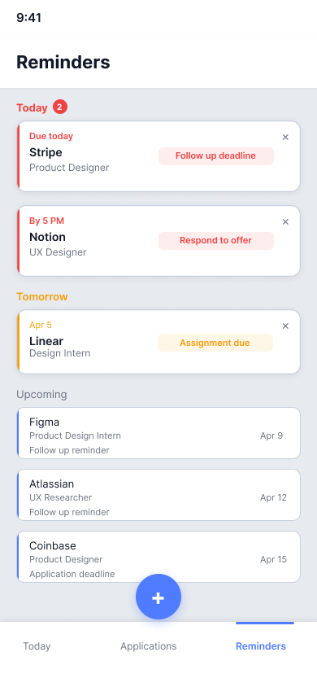
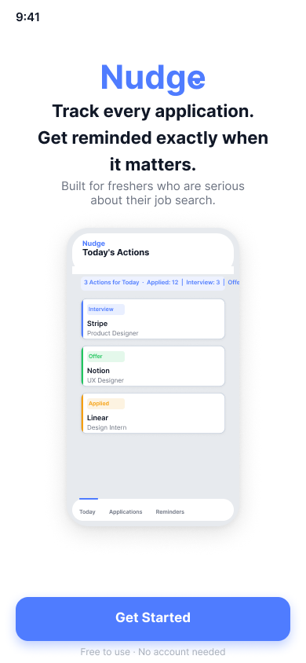

Nudge
A mobile-first job application tracker built for freshers so no opportunity slips through.
Most job seekers don't lose opportunities because they lack skill they lose them because they miss moments.
A forgotten follow-up. A missed email. An interview that slipped through.

Explore the full interactive prototype
View Prototype →Freshers lose opportunities not because they lack skill but because their application process is too scattered to keep up with.
The problem wasn't a lack of tools it was that existing tools required effort users couldn't sustain.
A reminders-first mobile tracker that works for the user driving action through visibility, nudges, and minimal input.
Missing moments, not missing effort
Freshers apply to multiple roles across platforms, but their tracking is inconsistent or doesn't exist at all. I faced the same problem noting things down in a notebook, forgetting to update, and eventually losing track completely. The process of tracking becomes more exhausting than the actual job search.
"Everything just disappears after applying."
"I don't know what's happening after I apply."
"I got a call from HR and I wasn't prepared at all. I didn't even remember the role."
Freshers lose opportunities not because they lack skill but because their application process is too scattered to keep up with.
What freshers actually said
I spoke to 5 students and freshers actively applying for jobs, focusing on how they currently track applications and where things break down.
Three clear patterns emerged. First, tracking systems either don't exist or aren't maintained consistently. Second, applications are scattered across platforms, making it hard to stay updated. Third, most missed opportunities happen not during applying, but after when follow-ups, emails, or deadlines are overlooked.
What surprised me: the problem wasn't the lack of tools it was that existing tools required effort users couldn't sustain.
The aha moment
The problem wasn't a lack of tools it was that tracking required effort users couldn't sustain.
This shifted the focus from building a better tracker to reducing user effort entirely. If the system depends on consistency, it will eventually fail because users don't.
This meant the product had to work for the user driving action through reminders, visibility, and minimal input.
Three principles every decision was tested against
To ensure every design decision stayed focused on solving the real problem, I defined three core principles.
Remind without depending on memory
The system should proactively notify users at the right time so they don't have to remember follow-ups or deadlines.
Always visible status
Users should instantly know where they stand across all applications without digging through tools.
Effortless to maintain
Tracking should require minimal input so users can sustain it without it feeling like extra work.
A reminders-first system, not a traditional tracker
I chose a mobile-first approach because job seekers apply and check updates on their phones, making it the fastest place to capture applications and receive timely reminders. Designing for mobile ensured the product fits naturally into their existing behaviour without adding extra effort.
Instead of building a traditional tracker, I focused on a reminders-first system. Since users lose opportunities due to missed moments, the product prioritises timely nudges and clear next actions over passive tracking.
Every feature mapped to a real problem
Today's Actions Dashboard
Problem → Users don't know what needs attention
Surfaces time-sensitive tasks like follow-ups and interviews upfront so the most urgent actions are impossible to miss.
Smart Reminders
Problem → Users miss emails and deadlines
Sends timely nudges including lock screen notifications so actions happen when they matter, not after it's too late.


Quick Status Update
Problem → Users stop tracking because it feels like work
A bottom sheet that allows instant status changes in under 10 seconds no forms, no navigation, no friction.

Application Detail with Next Action
Problem → Users lack clarity on what to do next
Clearly shows the current status and the next required step for each application always visible, always specific.

9 screens. One complete product story.
Onboarding
Quickly communicates the value of staying on top of applications without relying on memory.

Home Screen Today's Actions
Surfaces urgent actions first while giving a clear view of all applications and their status.
Empty State
Encourages new users to log their first application with zero friction and clear value communication.

Add Application
Enables fast, low-effort logging right after applying with an automatic follow-up reminder built in.

Application Detail
Provides full clarity on status, history, and the next action to take everything in one place.
Quick Status Update
Updates application status in under 10 seconds. No navigation. No forms. Just tap and done.
Applications List
Full pipeline sorted by urgency the most time-sensitive applications always surface first.

Reminders
Organises upcoming tasks into Today, Tomorrow, and Upcoming so users always know what to act on next.
Lock Screen Notification
Delivers timely, specific nudges before the user even opens the app this is the core product promise made visible.
Version 2 directions
This is an MVP focused on solving the core problem, with several improvements planned for future iterations.
Smarter automation
Auto-capture job details from links to reduce manual input further.
Email integration
Detect responses and updates directly from inbox to keep status in sync.
Personalised nudges
Adapt reminder timing based on user behaviour and response patterns.
What changed and what I learned
Early feedback showed users felt more in control of their applications, especially with "Today's Actions" making it clear what to do next. The reminder system reduced anxiety around missing follow-ups, and users said the process felt lighter compared to spreadsheets or notes.
This project taught me that solving the right problem matters more than adding features. I initially focused on building a better tracker, but research showed the real issue was consistency.
I also learned how small decisions like reducing input effort or highlighting next actions can directly impact user behaviour. The most important design move wasn't adding a feature. It was removing the friction that was stopping users from acting.